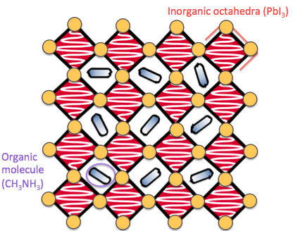
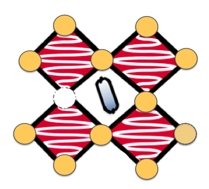

My research is centred around a family of materials called the hybrid halide perovskites. These materials have become incredibly popular over the last decade as they can convert sunlight into electricity efficiently, and have the potential to form more flexible, lightweight and cheaper solar panels than those currently on the market. My research aims to understand the quantum physics underlying this material so that we can improve the efficiency of future devices.
I use a branch of physics called Density Functional Theory (DFT) to model how electrons in perovskites behave. This theory has no input from experiment - it is derived from quantum mechanics - and I still find it amazing that it is able to predict properties that are later measured in experiment [1].
When we model a material using DFT it is usually assumed that the material is perfect - that there are no defects (missing or extra atoms). In reality a material always has defects - this is unavoidable due to the laws of thermodynamics [2] - and they are important to understand because they can have a detrimental effect on the performance of a solar cell. The puzzle is that we know the perovskite material within a solar cell has many defects, but these do not seem to adversely affect the performance of the device. I model the defects and vibrations of the perovskite material to try and understand why this is.
Funding for my research is through the Centre for Doctoral Training in New and Sustainable Photovoltaics.
[1] There are a number of case studies given in “Materials Modelling using Density Functional Theory”, Feliciano Giustino, section 1.2.
[2] This is because the cost in lattice energy is balanced by the change in entropic energy. See, for example, “Defects and Defect Processes in Nonmetallic Solids”, Hayes and Stoneham, section 3.1.

